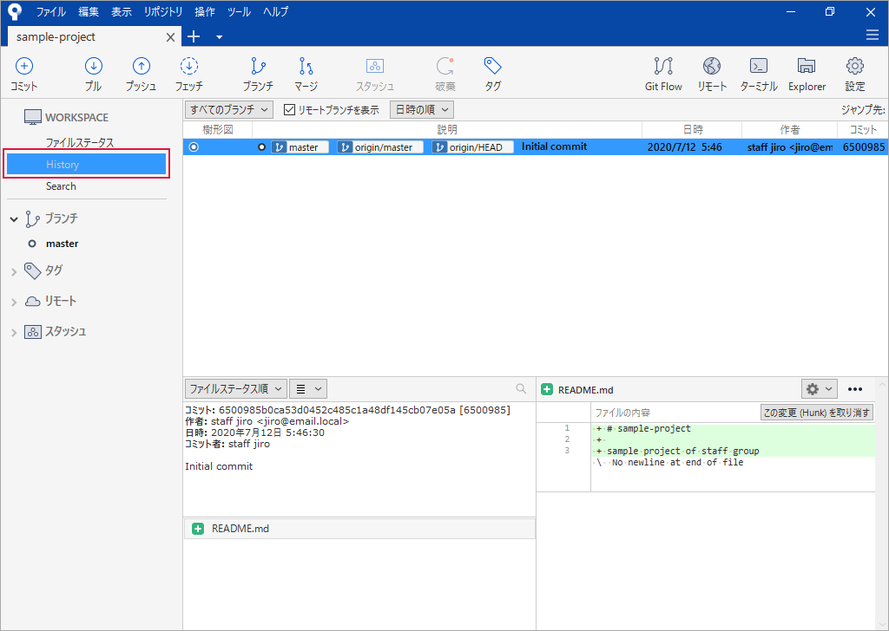

クローン¶
「 プロジェクトの作成 」で作成したリモートリポジトリをクローンしてローカルリポジトリを作成します。
{kind=link}
{kind=link}
{kind=link}
{kind=link}
Sourcetree¶
Clone をクリック
次の値を入力 → クローン をクリック
項目
入力値
備考
元のパス/URL
上述の手順でクリップボードにコピーした URL を貼り付け
保存先のパス
c:\gitlab\sample-project
リポジトリを保存するフォルター（ワーキングディレクトリ）
名前
sample-project
「保存先のパス」のフォルダーの値を元に自動設定される
Local Folder:
[ルート]
デフォルトのまま
処理の途中で下図が表示されたら次の値を選択 → Select をクリック
項目
選択値
備考
Select a credential helper
<no helper>
Always use this from now on
チェックを入れる
処理の途中で下図が表示されたら次の値を入力 → Login をクリック
項目
選択値
備考
Username
riki
GitLab サーバーにログインするときの Username
Password
GitLab サーバーにログインするときのパスワード
Remember password
チェックを入れる
クローン中
クローン終了
History をクリック → クローンした結果を確認
リモートリポジトリをクローンした直後のローカルリポジトリはの状態はリモートリポジトリと同じなので、
master・origin/master・origin/HEADの位置がすべて同じになります。
{kind=link}
{kind=link}
{kind=link}
{kind=link}
{kind=link}
{kind=link}
{kind=link}
クローン後のローカルリポジトリを登録するフォルダーの状態¶
クローン後の gitlab フォルダー内の状態です。フォルダー内に sample-project フォルダーが作成されました。
{kind=link}
sample-project フォルダー内の状態です。 .git フォルダーがクローンされたリポジトリの本体です。 README.md はリポジトリに含まれるファイルです。
{kind=link}